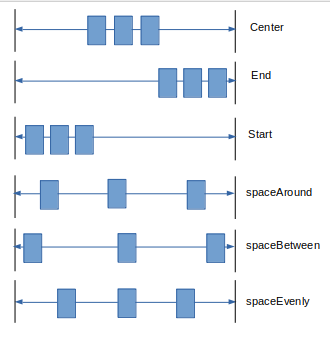
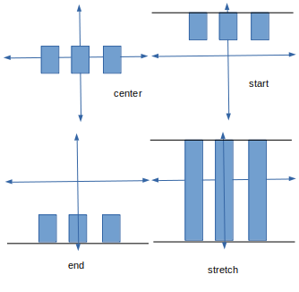
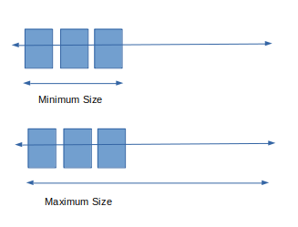

A widget that displays its children in a horizontal array.
Row(
children : <Widget>[
Text("Hi"),
Text("Hello"),
],
),
The Row widget doesn't scroll. If you need scrolling, instead of Row widget, consider using ListView widget.
The children of Row widget can have two types of widget, they can be non-flexible or flexible. Non-flexible means their size is constant and doesn't expand, they takes space as much as they need. But Flexible widget can expand their width or height in order to fill the available space of the row.
In general it is considered an error to have more children in a row than will fit in the available room. If the non-flexible contents of the Row are together wider than the row itself, then the row is said to have overflowed. When a row overflows, the row doesn't have any remainin space to share between its expanded and Flexible children. The Row reports this by drawing a yellow and black stripped warning box on the edge that is overflowing.
When Row widget layouts its children, it follows the following steps :
So, the Row widget gives the proper size to the non-flexible child first, after that if there's remaining space is available, it is divided to the flexible children accroding to their flex factor. If there's no space available to distribute, it will give error.
So the best practice is to use Flexible widget to fill the available space of the Row widget and make sure in any way the Row doesn't get overflowed.
Here are some arguments you can use to control the Row widget:
This argument specifies how the children should be placed along the main axis in a flex layout. Use MainAxisAlignment class to provide the value. For Row widget the main axis is from left edge to right edge. The class MainAxisAlignment defines the following constant -
center : Place the children as close to the middle of the main axis as possible.end : Place the children as close to the end of the main axis as possible.spaceAround : Place the freespace evenly between the children as well as half of the space before and after the first and last child. That means the each child has its own same amount of space before and after it. In this value, the amount of space between two child is double the space between left edge and the first child.spaceBetween : Place the fress space evenly between the children. It cases the first child to appear at the left edge without having any space. And it causes the last child to appear at the right edge without having any space.spaceEvenly : Place the free space evenly between the children as well as before and after the first and last child. IN this value, the amount of space between two child is same as the amount of space between the first child and left edge.start : Place the children as close to the start of the main axis as possible.The following pictures explain each constants visually :
This represents how the children should be placed along the cross axis in a flex layout. Use CrossAxisAlignment class to provide the value. For Row widget the cross axis is from top to bottom. This class defines the following constants -
center : Place the children so that ther centers align with the middle of the cross axis. This is the default.end :Place the children as close to the end of the cross axis as possible.start : Place the children as close to the start of the cross axis as possible.stretch : This value forces the children to fill the cross axis. This means if you use this value, the children's height will be maximum height as this value causes the children to stretch their height so it fills the whole height.The following pictures explain each constants visually :
This argument is used to control the width of the Row n the main axis. After allocating space to children, there might be some remaining free space. This argument is used to control wheater to maximize or minimize the amount of free space. This argument is useless when you use flexible or Expanded children in the Row widget, since the Flexible or Expanded children will leave no remaining space and it will make the Row widget to have maximum width always. Use the class MainAxisSize to provide the value. This class defines the following two constants -
min : Minimize the amount of free space along the main axis.max : Maximize the amount of free space along the main axis.By default Row widget tries to be as big as possible. That is the default value is **max**
The following pictures explain each constants visually :
